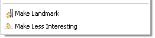
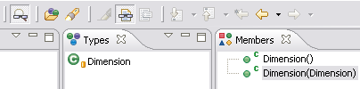

Show all filtered children

Highlight a task context

|
Show all filtered children |
When you are using filtering in a Mylar view you have the option of
temporarily showing all children of a filtered node by <alt>clicking
a node that is not currently selected. For example, you can
<alt>click a source folder, keep the <alt> key down, and continue
drilling down until you find a method of interest.
|
|
|
|
|
Highlight a task context |
You can associate a task with a
highlighter. This can be useful if you are using Mylar without the
filtering support. It also allows you to distinguish between
task contexts if you have multiple tasks active.
|
|
|
|
|
Search within task context |
The automatically updated Mylar Task
Context working set can be searched as any other working set, either
via the popup menus or using the search dialog. For example,
to find all System.out/err calls before checking in, search for
"System." within the task context. To quickly search all references
click Alt+Shift+G.
|
|
|
|
|
Directly manipulate interest |
Directly manually manipulate the
interest level of elements by right clicking them and using the two
Mylar actions in the popup menu. Keyboard shortcuts for these
are Ctrl+Alt+Shift+Up Arrow for Make Landmark, and
Ctrl+Alt+Shift+Down Arrow for Make Less Interesting.
 |
|
|
|
|
Interest filtering for the Java Browsing perspective |
Interest filtering can be toggled for
the Packages, Types, and Members views simultaneously by clicking
the leftmost toolbar button visible below.  |